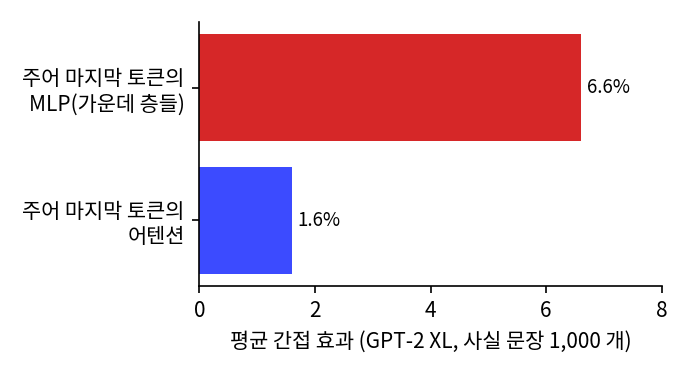
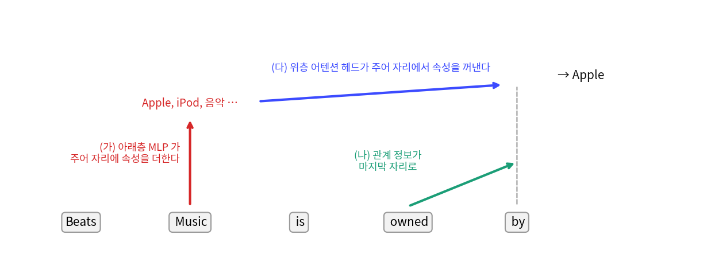
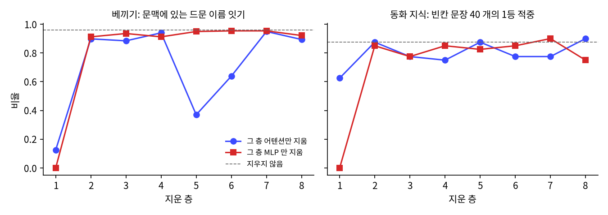
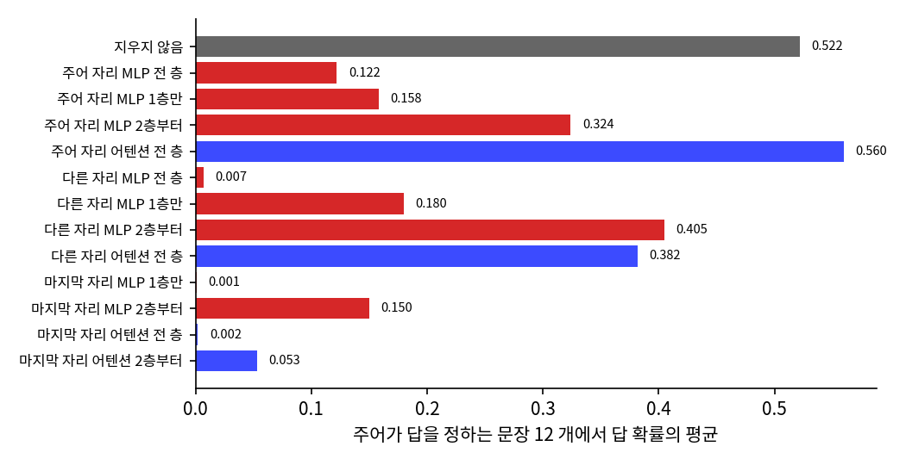

부품을 다시 보기: 헤드는 왜 여럿이고, MLP 는 무엇을 아는가
민준의 추측을 재 보기: 지식은 MLP 에 있는가
민준이 설정서 셋째 줄 옆에 큰 글씨로 「가장 중요한 부분. MLP 에 넣으면 끝」이라고 적어 놓자, 서연이 그 옆에 조그맣게 물음표를 그렸다.

네 말대로면 MLP 를 지울 때 지식은 사라지고, 어텐션이 하는 일은 멀쩡해야 해. 어텐션을 지우면 반대고.

좋은 시험이에요. 두 일을 따로 재면 되겠네요. 지울 부품은 파라미터를 그대로 두고 출력만 0 으로 바꾸면 되고요. 먼저, 이 물음을 큰 모델에서 물었던 사람들 이야기를 해 볼까요?
역사: 스페이스 니들은 어느 층에 있는가
메릉(Kevin Meng), 바우(David Bau), 안도니안(Alex Andonian), 벨린코프(Yonatan Belinkov)가 쓴 「Locating and Editing Factual Associations in GPT」(NeurIPS 2022)의 첫 물음은 「큰 언어 모델은 사실을 어디에 저장할까?」다. 그들의 방법은 고장 낸 뒤 한 군데만 고쳐 보는 것이다. 「The Space Needle is in downtown」에서 주어 토큰을 망가뜨려 모델이 Seattle 을 못 맞히게 만들고, 층·위치를 하나 골라 그 지점의 값만 깨끗한 실행에서 가져와 되돌린다. 되돌렸을 때 답 확률이 평균 얼마나 돌아오는지(평균 간접 효과)를 보면 그 지점이 사실을 얼마나 나르는지 알 수 있다. GPT-2 XL 에서 사실 문장 1,000 개를 평균하면 큰 효과가 두 곳에서 나왔다. 답을 내기 직전 위치의 위층은 예상한 대로였고, 새로운 발견은 주어의 마지막 토큰, 가운데 층들이었다. 그 자리를 MLP 와 어텐션으로 나눠 보니 MLP 의 효과가 6.6%, 어텐션이 1.6% 였고, 어텐션은 마지막 토큰에서 더 컸다.

그들은 이것이 저장 장소라면 그곳의 가중치를 고쳐 사실을 바꿀 수도 있을 것이라 보고, MLP 행렬 하나에 벡터 둘의 곱으로 적히는 행렬(랭크 1)을 더해 스페이스 니들을 파리로 옮기는 방법(ROME, Rank-One Model Editing)을 만들었다. 편집은 가운데 층 MLP, 주어의 마지막 토큰에서 가장 잘 먹혔으니 민준의 추측과 같은 결론처럼 보인다.
꺼내는 과정을 추적한 쪽은 게바 팀이다. 「Dissecting Recall of Factual Associations in Auto-Regressive Language Models」(EMNLP 2023)는 「Beats Music is owned by」에서 Apple 이 나오는 길을 어텐션 연결을 끊어 가며 따라갔다. 먼저 아래층 MLP 가 주어의 마지막 자리에 주어와 관련된 속성을 잔뜩 더하고, 관계(owned by)의 정보가 마지막 자리로 전해진다. 마지막으로 위층 어텐션 헤드가 마지막 자리에서 주어 자리를 읽어 속성을 꺼내는데, 저자들은 「아마 놀랍겠지만」이라는 말을 붙이며 이 헤드들이 주어–속성 대응을 자기 파라미터에 담고 있는 일이 많다고 적었다. 저장은 MLP, 꺼내기는 어텐션이라고 깔끔하게 나눠지지 않는다는 뜻이다.

그리고 찾아낸 장소가 곧 고칠 장소인 것도 아니었다. 하세(Peter Hase) 팀은 「Does Localization Inform Editing?」(2023)에서 메릉 팀의 방법으로 찾은 위치가, 사실을 고치려면 어느 층의 MLP 를 편집해야 가장 좋은지를 알려 주지 못한다고 보고했다. 사실이 저장된 곳처럼 보이지 않는 층을 고쳐도 사실이 바뀌었다.

우리 동화 GPT 도 주어 자리를 지워 보자.
그건 큰 모델에서 나온 결과예요. 메릉 팀은 GPT-2 XL 에서 사실 문장 1,000 개를 평균해 주어 마지막 토큰 MLP 6.6%, 어텐션 1.6% 를 얻었어요. 우리 8층과 문장 12 개로는 주어 자리와 다른 자리가 갈리지 않아요. 크기 때문인지 문장 수 때문인지는 가르지 않았어요. 우리 모델에서는 층과 부품을 하나씩 지워 볼게요.
우리 모델에서 지워 보기
우리에게는 동화 GPT 가 있다(8층, 폭 512, 파라미터 27,579,392 개). 두 가지를 잰다. 베끼기: 학습 글에 드물거나 없는 이름 20 개를 문맥에 주고, 그 이름이 다시 나올 때 첫 토큰 다음 토큰들을 맞히는 비율이다(「There was a girl named Seoyeon. She liked to read books. One day, S」 다음에 e, oy 가 오는지). 답이 문맥에 있으니 앞을 읽어야 맞힌다. 동화 지식: 「The elephant had a long」 → trunk, 「The bird sat in its」 → nest 처럼 답이 문맥에 없는 빈칸 문장 40 개에서 1등 토큰이 받아 줄 답에 드는 비율이다. 문장과 답은 실험을 돌리기 전에 정해 두었고(sources/gpt-parts/knockouts.py), 지우지 않은 동화 GPT 는 40 개 가운데 87.5% 를 맞힌다. 이름은 11 개가 학습 글 전체에 한 번도 없고 9 개는 4~79 번 나오는데, 없는 11 개만으로 재도 지우지 않은 모델 0.945, 5층 어텐션을 지운 모델 0.305 로 아래 표와 같은 모양이다(knockouts3.out). 빈칸 문장에는 「The cat said,」 → 따옴표처럼 글버릇에 가까운 것도 섞여 있어서, 사실만 묻는 시험보다 넓다.
# sources/gpt-parts/knockouts.py 에서 발췌
class Knock:
"""(층, 부품) 집합의 출력을 0 으로. mask 를 주면 그 자리만(1 이면 지움)."""
def __init__(self, m, targets, mask=None):
self.hs = []
for l, part in targets:
mod = getattr(m.blocks[l], part)
self.hs.append(mod.register_forward_hook(
lambda _m, _i, out, mask=mask: out * 0 if mask is None else out * (1 - mask[..., None])))
민준은 층 하나의 어텐션이나 MLP 만 지웠다. 표의 베끼기 는 위에서 말한 베끼기이고(출력 파일의 베끼기B 칸), 지식1등 이 동화 지식이다.

지운 것 bpb 베끼기 지식1등 지식확률
지우지 않음 0.4472 0.958 0.875 0.642
1층 MLP 만 2.9565 0.000 0.000 0.000
2층 MLP 만 0.4879 0.912 0.850 0.598
5층 MLP 만 0.4816 0.949 0.825 0.596
8층 MLP 만 0.5389 0.921 0.750 0.653
1층 어텐션 만 1.6726 0.125 0.625 0.302
2층 어텐션 만 0.5395 0.898 0.875 0.649
5층 어텐션 만 0.4964 0.370 0.875 0.642
6층 어텐션 만 0.4964 0.639 0.775 0.543
8층 어텐션 만 0.4659 0.894 0.900 0.647
세 가지가 눈에 띈다. 첫째, 1층 MLP 하나를 지우면 바이트당 비트가 0.4472 에서 2.9565 로 뛴다(표의 바이트당 비트는 검증 글 앞 500만 토큰으로 잰 값이라, 검증 글 전체로 잰 0.4253 과 다르다). 토큰 임베딩이 다음 층들에게 읽히려면 1층 MLP 를 거쳐야 하는 듯한데, 왜 그런지는 층을 지나며 벡터가 어떻게 변하는지 들여다봐야 답할 수 있다. 둘째, 베끼기가 크게 무너지는 곳은 5층 어텐션(0.958 → 0.370)과 6층 어텐션(0.639)이다. 같은 지우기에서 동화 지식은 0.875, 0.775 로 거의 그대로다. 셋째, 2층부터는 MLP 를 어느 층 하나 지워도 베끼기와 동화 지식이 크게 움직이지 않는다. 지식이 한 층에 몰려 있지 않다는 뜻이다.
그러면 1층만 남기고 위층을 모두 지우면 어떨까?
동화 GPT: 1층을 남기고 지우기
지운 것 bpb 베끼기 지식1등 지식확률
지우지 않음 0.4472 0.958 0.875 0.642
2층부터 MLP 전부 1.6309 0.190 0.200 0.093
2층부터 어텐션 전부 1.4643 0.042 0.175 0.124
2층부터 둘 다 1.6335 0.042 0.125 0.039

봐! MLP 를 지우니까 지식이 0.875 에서 0.200 이잖아.

그 아래 줄을 봐. 어텐션을 지워도 0.175 야. 네 말대로면 지식은 멀쩡해야 하는 자리인데.

…왜 어텐션을 지웠는데 지식이 사라져?
「The elephant had a long」의 마지막 토큰은 long 이에요. 답을 내는 자리에 elephant 가 없으니 앞에서 읽어 와야 코끼리인 줄 알죠.

아, 지식이 있어도 꺼낼 길이 끊긴 거네요.
답을 어디서 꺼내는지 보려면 층이 아니라 자리를 나눠 지워야 한다. 주어가 답을 정하는 문장 12 개(elephant → trunk, bear → honey, king → queen …)에서, 모든 층의 주어 토큰 자리나 마지막 자리만 부품을 지웠다.
## 자리 지우기 2: 동화 GPT (문장 12 개)
지우지 않음 1등 적중 9/12, 답 확률 평균 0.522
주어 자리 MLP 전 층 1등 적중 3/12, 답 확률 평균 0.122
주어 자리 어텐션 전 층 1등 적중 9/12, 답 확률 평균 0.560
마지막 자리 어텐션 2층부터 1등 적중 1/12, 답 확률 평균 0.053

주어 자리의 어텐션은 전 층을 다 지워도 0.560 으로 지우기 전과 비슷한데, 「The elephant」는 글 맨 앞이라 읽어 올 것이 거의 없으니 놀랍지 않다. 마지막 자리에서는 어텐션을 2층부터 지웠을 때 0.053 이 되어, 답을 내는 자리가 앞을 읽지 못하면 답도 나오지 않는다는 것을 보여 준다. 주어 자리 MLP 를 지워 0.122 로 떨어지는 줄은 주어 자리가 특별하다는 증거가 되지 못한다. 문제 6 에서 대조군과 함께 다시 본다.
지우는 것과 처음부터 없는 것
지우기는 함께 배운 모델에서 부품 하나를 뺀 것이라서, 문제 2 에서 본 대로 그 부품 없이 처음부터 배우면 이야기가 다를 수 있다. 민준은 작은 GPT 조건에서 네 모델을 다시 학습했다(씨앗 1337, 1).
# 씨앗 1337 bpb 베끼기 지식1등 지식확률
온전한 4층 0.6129 0.583 0.675 0.498
MLP 없는 4층 0.7294 0.319 0.600 0.383
MLP 없는 12층 0.7001 0.435 0.550 0.404
어텐션 없는 4층 1.2895 0.019 0.125 0.064
# 씨앗 1
온전한 4층 0.6116 0.634 0.650 0.487
MLP 없는 4층 0.7389 0.287 0.625 0.429
MLP 없는 12층 0.6963 0.394 0.575 0.425
어텐션 없는 4층 1.2895 0.023 0.125 0.068
두 씨앗이 비슷하게 나왔다. MLP 없이 처음부터 배운 4층은 바이트당 비트가 0.7294, 0.7389 로 나빠졌는데도 동화 지식은 0.600, 0.625 로 온전한 모델(0.675, 0.650)과 큰 차이가 나지 않는다. 함께 배운 작은 GPT 에서 2층부터 MLP 를 지웠을 때 0.350 까지 떨어지는 것과 다르고, 베끼기만 0.319, 0.287 로 온전한 모델(0.583, 0.634)의 절반쯤이다. 반대로 어텐션 없는 4층은 지금 토큰 하나만 보고 답해야 하니 동화 지식이 0.125, 베끼기가 0.019, 0.023 으로 거의 사라졌다.
MLP 없이 배워도 지식이 0.600 이면, 내가 아까 왜 그렇게 신났던 거지.
베끼기는 절반이고 바이트당 비트도 나빠. MLP 가 하는 일이 없는 건 아니야. 그런데 어디에 지식을 적을지는 학습이 있는 부품으로 알아서 정하는 것 같아.

지우기 실험은 지금 이 모델이 어떻게 일을 나눠 놓았는지를 재고, 다시 학습하는 실험은 그 부품이 꼭 있어야 하는지를 재요. 두 실험이 다른 말을 한 게 아니에요. 그래도 빈칸 문장 40 개가 지식 전부는 아니니까, 외운 사실의 양을 직접 재는 연구도 나중에 봐요.
ML에서: 지식 편집이 어려운 이유
사실을 특정 가중치에서 찾아 바꾸는 일은 기대를 많이 모았지만, 지금까지의 결과는 이 절의 표와 비슷한 그림을 준다. 한 층을 고치면 사실이 바뀌는 듯 보여도, 저장 장소와 고칠 장소가 일치한다는 보장이 없고(하세 팀), 꺼내는 경로에는 어텐션의 파라미터도 함께 있다(게바 팀). 민준의 「여기가 가장 중요한 부분」을 숫자로 다듬으면, MLP 를 지울 때 지식이 크게 줄어드는 것은 맞지만 어텐션을 지워도 지식이 비슷하게 줄어들고, 앞 문맥을 베끼는 일은 어텐션에 훨씬 크게 기대며, 처음부터 MLP 없이 배운 모델은 동화 지식 점수가 크게 줄지 않는다. 우리 동화 GPT 에서 우리가 고른 문장 40 개로 잰 값이라는 단서는 붙는다.
문제 6. 1층 MLP 는 모든 지식의 창고인가
동화 GPT 에서 1층 MLP 만 지우면 동화 지식이 0.875 에서 0.000 이 되고, 5층 MLP 만 지우면 0.825 다. 이 숫자로 「동화 지식은 1층 MLP 에 저장되어 있다」고 결론 내릴 수 있는가? 다음 자리 지우기 결과를 함께 보라. 「주어 자리 MLP 1층만」 답 확률 평균 0.158, 「다른 자리 MLP 1층만」 0.180, 「지우지 않음」 0.522.

0.875 에서 0 이면 창고 맞는 거 아니야? 다른 층은 거의 안 떨어지는데.
그런데 1층을 지우면 베끼기도 0 이고 바이트당 비트도 2.96 이야. 지식만 사라진 게 아니라 다 사라졌어.
그래서 자리 지우기를 봐요. 1층 MLP 를 주어 자리에서만 지우면 0.158 이고요. 주어와 아무 상관 없는 자리에서 지우면요?
0.180 이요. 코끼리가 없는 자리에서 지워도 똑같이 무너지네요. 그럼 코끼리 지식이 거기 있어서 무너진 건 아니네.
지웠을 때 나빠지는 것은 「꼭 지나가는 곳」이라는 증거일 뿐이에요. 대조군 없이는 무엇을 담고 있는지까지 말할 수 없어요.
전기를 끊으면 냉장고 음식이 다 상한다고 전선이 음식을 저장하는 건 아닌 거네요.